pfSense administration
A quick reference for pfSense administration.
- pfSense Documentation
In all cases where the pfSense documentation is either referenced directly or closely adapted, a link back to the source page or section is provided.
Many of the initial steps are the same as the pfSense documents, but with less or different detail, and organized in a way that I've found I repeat when setting up a pfSense system. This cheatsheet most closely resembles the creation of a home lab, and ways of gaining visibility into a small set of networks. Be sure to review the pfSense documentation for complete details.
Additional References
-
FreeBSD Handbook - Get started with the CLI using this as a reference.
-
Lawrence Systems - Channel covering all things networking. Many pfSense examples were adapted directly from there.
-
The Cyber Plumber's Handbook - Free pdf with in depth but very clear and easy to understand exercises of traversing networks.
Downloading
Install image documentation:
- https://docs.netgate.com/pfsense/en/latest/install/download-installer-image.html
- https://docs.netgate.com/pfsense/en/latest/install/download-installer-image.html#verifying-the-integrity-of-the-download
pfSense installer images: - https://www.pfsense.org/download/
Be sure to verify the sha256sum of the installer file
user@device:/home/user/Downloads$ sha256sum -c ./pfSense-CE-2.6.0-RELEASE-amd64.iso.gz.sha256
pfSense-CE-2.6.0-RELEASE-amd64.iso.gz: OK
Installation
Physical Hardware
This section is closely adapted from here: https://docs.netgate.com/reference/create-flash-media.html
-
Creating bootable media
-
Insert your external device (typically usb).
-
Identify the device path under
/dev/Xby runningdmesg | tail. -
Another easy way to identify device mount point is with the Gnome
disksutility, orgparted. -
Erase the target media partition table:
https://docs.netgate.com/reference/create-flash-media.html#cleaning-the-target-disk
sudo dd if=/dev/zero of=<usb_device_name> bs=1M count=1
sudo dd if=/dev/zero of=/dev/sdx bs=1M count=1
Here /dev/sdx is used as an example. If you have two internal SSD's, you'll likely have /dev/sda and /dev/sdb
Connecting a third removable USB drive, will then show up under /dev as /dev/sdc
NVME drives will show up as /dev/nvme0n1, /dev/nvme1n1 and so on.
- Write pfSense image to media:
https://docs.netgate.com/reference/create-flash-media.html#write-the-image
sudo dd if=<image_file_name> of=<usb_device_name> bs=4M status=progress
sudo dd if=/opt/iso/pfSense-CE-2.6.0-RELEASE-amd64.iso of=/dev/sdx bs=4M status=progress
# you should see output similar to the following, this operation does not take long:
182+1 records in
182+1 records out
767463424 bytes (767 MB, 732 MiB) copied, 10.8692 s, 70.6 MB/s
See this table of examples for all OS's:
Alternatively on Windows you can use:
or
Powering On for Install.
Read every step before starting.
Serial console commands and information taken directly from here: https://docs.netgate.com/pfsense/en/latest/hardware/connect-to-console.html#minicom
- Disconnect all ethernet cables
- From pfSense device
- From management PC
- Serial cable is unplugged
-
pfSense device is powered off
-
Connect the serial cable to both devices
- Start the serial console output on your managing PC:
- Identify the device name:
find /dev -name "*ttyUSB*" -ls 2>/dev/null - Replace
/dev/ttyUSBXwith your device name:sudo screen /dev/ttyUSBX 115200 - This will simply be a blank
screensession until the pfSense machine powers on
- Identify the device name:
- Plug in the installation media USB to the pfSense device
- Power on pfSense device
- Be ready to be back at your keyboard here
- Press any key to interrupt boot when prompted
- This happens relatively quickly after powering on the device, and gives you ~2 seconds to stop the boot sequence
From here your steps depend on the hardware's UEFI BIOS / shell settings to mount and run media.
- Netgate devices for example have a built-in shell which takes commands documented in each of their appliance's specific manuals
- Choose filesystem type (UFS / ZFS) and target installation media (the internal disk to install pfSense on)
- Some 32-bit OS images do not support the ZFS (SG-3100 for example)
When installation is finished, the console menu will indicate this clearly stating it has halted and be technically powered 'off' at this point
- Remove the insallation media
- Powercycle the device
- Unplug the power cable
- Wait 60 seconds
- Reconnect the power cable
To quit the serial console screen terminal: CTRL+SHIFT+A; then press \
Virtual Machine
Recommended machine settings:
- 1 Processor
- 2 vCPU Per Processor (minimum 1 vCPU)
- 2048 GB RAM (minimum 1024 GB RAM)
- NAT or Bridged Networking (The first public interface will be assigned as the WAN)
- 20+ GB Disk Size
- 1+ LAN Segements (VMware) or Internal Network Segments (VirtualBox)
- UEFI Firmware
Incompatible machine settings:
- DO NOT add a TPU (VMware)
- DO NOT enable Secure Boot (VMware)
TO DO: add screenshots showing VMware / VirtualBox configurations prior to the first boot.
The installation process:
https://docs.netgate.com/pfsense/en/latest/install/install-walkthrough.html
All defaults during the install steps are fine. It's recommended to use the ZFS filesystem from pfSense version 2.6.0 and onward.
- Auto (ZFS) Guided Root-on-ZFS
- Here on
Configure Options:where>>> Installis highlighted, press [Enter] - Press [Enter] on
stripehere unless you wantRAID - Press [Space] to 'select' the checkbox next to your virtual disk >
[*]then press [Enter]- If you don't select an available disk, it will let you know
- Select
< YES >then press [Enter] - Skip spawning a shell unless you need to
- Press [Enter] here with
< Reboot >selected
- Here on
At this point you will be at the welcome menu for the console.
Optionally Press 8 to drop into a shell and make changes immediately.
For example, immediately change the root password:
passwd root
Backup & Restore
Test your backup configurations.
It's a good idea when finalizing the configuration of your machine, or resinstalling / upgrading the OS to always:
- Download an encrypted full configuration backup xml file.
- Immediately test restoring that configuration file to the target machine
Preserve Switch Configruationkeeps the switch configuration currently running on the machine, and IGNORES the switch configuration that would be restored from the backup xml file
- If the configuration restores successfully, you're ready to proceed with reinstalling / upgrading pfSense
Initial Setup (Post Install)
The fist steps in most cases.
Initial Setup via the Console (via VM, external display, or serial console):
Some basics can be easily accomplished from the console. Starting with the network interfaces.
https://docs.netgate.com/pfsense/en/latest/hardware/connect-to-console.html#gnu-screen
To find the serial USB device and connect via the serial console:
find /dev -name "*ttyUSB*" -ls 2>/dev/nullsudo screen /dev/ttyUSB0 115200
To quit the serial console screen terminal:
CTRL+SHIFT+A; then press\
Get which interface is your NAT / Bridged (publicly facing) interface from the shell menu 8) Shell:
# Use less -S to be able to scroll up and right to read terminal
ifconfig | less -S
If you assigned the default network interface in the hypervisor as the Bridged or NAT interface, it's almost always going to be em0.
Proceed to setup the interfaces with the guided prompts at 1) Assign Interfaces.
Followed by the 2) Set interface(s) IP address for each interface.
You can also install packages here if you choose to.
Be sure to install the accompanying pfSense-pkg-<package-name> for each package that has a way of interfacing with the WebGUI. For example:
pkg update -f
pkg install -y sudo pfSense-pkg-sudo
If you forget to install pfSense-pkg-sudo, you will not be able to configure is from the WebGUI (and in the case of sudo the configuraiton file is actually different).
From here, it's recommended to switch over to the WebGUI to finish the remaining setup.
The initial setup via the WebGUI:
https://docs.netgate.com/pfsense/en/latest/config/setup-wizard.html
Block private networks is OK on WAN connected to the public internet (ie; the ip address is publicly routable) though if you plan to -J with ssh into internal subnets, you would not enable this.
Block Bogons is OK on all interfaces
Choose a non-publicly routable tld as the localdomain name, any of these four from RFC 2606 will work:
.test
.example
.invalid
.localhost
However the default here is fine.
After you complete the installation and initial setup process you'll be at the dashboard. From there, you can proceed with the following:
DNS
The first thing to configure could be DNS. Using DNS over TLS will ensure you're receiving legitimate replies to queries.
https://docs.netgate.com/pfsense/en/latest/services/dns/resolver-config.html
Under System > General Setup > DNS Server Settings
DNS: Servers
The following lists three popular publicly available DNS resolvers that support DNS over TLS forwarded queries:
| IP Address | Hostname for TLS validation |
|---|---|
1.1.1.1 |
cloudflare-dns.com |
1.0.0.1 |
cloudflare-dns.com |
2606:4700:4700::1111 |
cloudflare-dns.com |
2606:4700:4700::1001 |
cloudflare-dns.com |
9.9.9.9 |
dns.quad9.net |
149.112.112.112 |
dns.quad9.net |
2620:fe::fe |
dns.quad9.net |
2620:fe::9 |
dns.quad9.net |
8.8.8.8 |
dns.google |
8.8.4.4 |
dns.google |
2001:4860:4860::8888 |
dns.google |
2001:4860:4860::8844 |
dns.google |
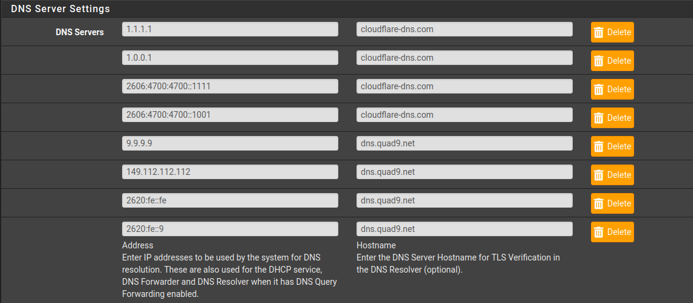
This is what /var/unbound/unbound.conf may look like with DNS over TLS forwarding enabled:
...8<...
# Forwarding
forward-zone:
name: "."
forward-tls-upstream: yes
forward-addr: 1.1.1.1@853#cloudflare-dns.com
forward-addr: 1.0.0.1@853#cloudflare-dns.com
forward-addr: 2606:4700:4700::1111@853#cloudflare-dns.com
forward-addr: 2606:4700:4700::1001@853#cloudflare-dns.com
forward-addr: 9.9.9.9@853#dns.quad9.net
forward-addr: 149.112.112.112@853#dns.quad9.net
forward-addr: 2620:fe::fe@853#dns.quad9.net
forward-addr: 2620:fe::9@853#dns.quad9.net
...>8...
UNCHECK the following if it's checked:
System > General Setup > DNS Server Override (Allow outside DNS to override server list)
Set the following option:
System > General Setup > DNS Resolution Behavior > select "Use local, ignore remote"
This ensures queries are sent to unbound, which then forwards them to upstream DNS over TLS servers.
Under Services > DNS Resolver:
- [x] Enable DNS Resolver
- [x] Enable DNSSEC Support* (Check logs if you have issues, and disable. Ideally keep it enabled)
- [x] Enable Forwarding Mode
- [x] Use SSL/TLS for outgoing DNS
- [x] [Optional] DHCP Registration / Static DHCP (Allows Dns resoultion of local
<hostname>.<localdomain>)
IMPORTANT: Be sure your /var/unbound/unbound.conf contains the DNS over TLS entries once you configure and apply them in the GUI.
For logging, the following three configuration options can be applied. Only log-queries is uncommented here to avoid overwhealming the logs.
Add any of the following to the DNS resolver's custom options under 'server':
server:
log-queries: yes
#log-replies: yes
#log-tag-queryreply: yes
This file can be edited manually at /var/unbound/unbound.conf
See unbound's example configuration file for more:
https://github.com/NLnetLabs/unbound/blob/master/doc/example.conf.in
DNS: Filtering Wesbites
https://docs.netgate.com/pfsense/en/latest/recipes/block-websites.html
The same configuraiton syntax would apply here that you'd use for unbound.
One solution is to create a separate file just for this, for example /var/unbound/conf.d/blocklist.conf.
You will need to tell unbound to 'include' the /var/unbound/conf.d/ directory if you decide to use it by adding the following to /var/unbound/unbound.conf:
# Include conf.d files
include: /var/unbound/conf.d/*
METHOD 1 (OLD)
This will route all traffic for a given domain to the 'null' address 0.0.0.0 or :: and has been replaced by method 2.
local-zone: "domain.toblock" redirect
local-data: "domain.toblock A 0.0.0.0"
local-data" "domain.toblock AAAA ::"
METHOD 2 (BEST)
The same as method 1, but requiring only a single line. This makes the file easier to generate from other lists, and manage.
local-zone: "domain.toblock" always_null
METHOD 3 (SECOND BEST)
If you have an older version of unbound that does not support always_null this is your best choice.
local-zone: "domain.toblock" always_nxdomain
Block AS Numbers by Alias:
Also see this example in the Netgate docs:
https://docs.netgate.com/pfsense/en/latest/recipes/block-websites.html
Network Interfaces
https://docs.netgate.com/pfsense/en/latest/config/interface-configuration.html
- Enable Interfaces under
Interfaces > Assignments - Configure RFC1918 address range subnets
Interfaces > OPTx > Static IPv4 Configuration- Assign the interface an address and define the CIDR range available here.
- EXAMPLE: 192.168.20.1/24
- Here is where you configure IPv6 or not
- For each interface,
Services > DHCP Server >[interface]selectEnable DHCP Server- [If Static DHCP = no] Set range of +10/-10 hosts, example:
- Available range: 192.168.1.1 - 192.168.1.254
- Set range to: 192.168.1.100 - 192.168.1.200 for 100 available IP addresses
- [Optional] Set static DHCP mappings of 127/127
- 127/127 means 127 IP Addresses available in the dynamic pool, and 127 available in the static pool (127 is half of a /24 network)
- MAC Address
- Hostname
- Choose an IP address from outside of the default range's pool:
- Available range: 192.168.1.1 - 192.168.1.254
- Set range to: 192.168.1.127 - 192.168.1.254 (dynamic range)
- Available IP's left for static mappings: 192.168.1.1 - 192.168.1.126
- [If Static DHCP = no] Set range of +10/-10 hosts, example:
NOTE: setting range at a +10/-10 minimum is a best practice especially for static mappings, in case interfaces or gateways require changes at a later point in time. This advice has been echoed in various Lawrence Systems videos for setting up networks.
TO DO: provide a direct link + timestamp from one of the videos covering this concept.
EXAMPLE:
The 100-200 pool (Easy for small, home, or lab networks)
- Network = 172.16.1.0/24
- Available Range = 172.16.1.100 to 172.16.1.200
This would make addresses 100 to 200 available for dynamic clients.
Any static addresses you would assign then fall under 1-99,201-254.
You can set static mappings within dynamic ranges, but if that IP address is taken by a dynamic client it cannot be assigned to the static client requesting it until the dynamic client disconnects and that lease expires.
RECOMMENDED: set static mappings to your own devices that will connect to the management port for administration purposes. The prevents any machine from connecting to that port and attempting to reach the management interface via (slow) brute force or a future bypass technique if one is discovered.
Users
-
System > General Setup -
webConfiguratoryou can change the systemThemeas well as add more dashboard columns (3 tends to work well). -
Save
-
System > Advanced -
Console Options
-
[x]Password protect the console menu
SSH access - Jump to ssh below to make those changes now.
https://docs.netgate.com/pfsense/en/latest/recipes/ssh-access.html
https://docs.netgate.com/pfsense/en/latest/config/advanced-admin.html#best-practices-for-ssh
Lawrence Systems, on pfSense remote management full video
NOTE: Be sure to conduct all of the following from a physical or virtual location with anti-lockout or serial console access just in case!
Ideally all management is done over SSH, with BOTH public key and password required for access.
However, requiring a public key alone is still fine! And in some cases, is the only way to do remote automation securely.
Add your public key to the desired user's page via System > User Manager > User > Authorized SSH Keys
Alternatively you can add it to the authorized_keys file:
# The empty line of "" is recommened to keep each entry on a separate line. Empty lines aren't interpreted.
echo "" >> ~/.ssh/authorized_keys
echo "ecdsa-sha2-nistp256 AAAAE2VjZHNhLXNoYTItbmlzdHAyNTYAAAAIbmlzdHAyNTYAAABBBJR19JyOxGYHSxsybdm3OsdFGW+fRITxVxmiB/S//S+60h6nddXZsCl/XhmvmLSXW6Z9EXivXm7428YC/PP3khM= kali@kali" >> ~/.ssh/authorized_keys
In the next step, we'll create a lower privilege user for remote access instead of using the built-in admin account (which is root).
NOTE: If you're wondering why Kali is used throughout this tutorial, the live disk image now has virtual machine tools installed by default since 2021.3. It's never been so easy to spin up a working and fully capable OS without running any post configuration scripts. There's also a vast array of useful tools available by default (ie; screen, wireshark, burpsuite, etc) which can be invaluable in troubleshooting and exploring your own devices. While it hasn't always been the best option for beginnners, if you're familiar with Ubuntu and Linux in general you'll do fine.
Creating a low privileged user for management (GUI):
Lawrence Systems, on pfSense remote management, timestamped at User Management
The following points try to summarize what the video covers:
System > User Manager > Add- Create a username and password (saved to your password manager)
Group Membershipyou'll want to highlightadminsand select>> Move to "Member of" listso this user can access the Web UI and login remotely.- Add the SSH public key for this user:
System > User Manager > Edit user (admin) > User1 > Authorized SSH Keys- Save
- Return to the page for the new user again.
- Under
Effective Privilegeschoose+AddandCtrl+clickto highlight BOTHWebCfg - All pagesandUser - System: Shell account accessthen chooseSaveat the bottom of the page.- Save
- Next, disable the built-in admin account:
System > User Manager > Edit user (admin) > Disabled, checkThis user cannot login- Save
NOTE: This will prevent the built-in admin account from both, SSH, and logging in to the WebGUI.
Optional, but recommended:
System > Package Manager > Available Packagesinstallsudo
Sudo can be managed under System > sudo, though the default settings work exactly as you'd expect.
After install, the sudoers file under /usr/local/etc/sudoers will look like:
root ALL=(root) ALL
admin ALL=(root) ALL
%admins ALL=(root) ALL
Meaning the admins group is funcitonally similar to being in group sudo in Debian-based systems.
NOTE: you do not need sudo installed to access the GUI over an SSH tunnel - the Diagnostics > Command Prompt shell still runs as root, and you can still install sudo later should you choose.
WHY?
Creating a dedicated management user mitigates the damage a local attacker can do, as the account password + sudo will be required to elevate privileges without a local exploit.
Creating a low privileged user for management (Console)
This next section directly references and is adapted from here:
https://docs.freebsd.org/en/books/handbook/basics/#users-synopsis
This will create an equivalent user account with groups similar to the steps you'd follow in the GUI.
The only difference is the $HOME directory is not world readable, we use 750 instead of the default of 755.
Run the adduser utility with root privileges to be walked through the following prompt:
[2.6.0-RELEASE][user2@pfSense.home.arpa]/home/user2: sudo adduser
Username: user4
Full name: Fourth User
Uid (Leave empty for default):
Login group [user4]: nobody
Login group is nobody. Invite user4 into other groups? []: admins
Login class [default]:
Shell (sh csh tcsh ssh_tunnel_shell scponly scponlyc git-shell bash rbash nologin) [sh]: tcsh
Home directory [/home/user4]:
Home directory permissions (Leave empty for default): 750
Use password-based authentication? [yes]:
Use an empty password? (yes/no) [no]:
Use a random password? (yes/no) [no]:
Enter password:
Enter password again:
Lock out the account after creation? [no]:
Username : user4
Password : *****
Full Name : Fourth User
Uid : 2004
Class :
Groups : nobody admins
Home : /home/user4
Home Mode : 750
Shell : /bin/tcsh
Locked : no
OK? (yes/no): yes
adduser: INFO: Successfully added (user4) to the user database.
Add another user? (yes/no): no
Goodbye!
Next you should have the following output:
[2.6.0-RELEASE][user2@pfSense.home.arpa]/home/user2: su user4
Password:
user4@pfSense:/home/user2 % id
uid=2004(user4) gid=65534(nobody) groups=65534(nobody),1999(admins)
To add a user to a group:
sudo pw groupmod somegroup -m user
sudo pw groupmod admins -m user5
To remove a user from a group:
sudo pw groupmod somegroup -d user
sudo pw groupmod zeek -d analyst1
To create, review, and delete a group:
https://docs.freebsd.org/en/books/handbook/basics/#users-groups
sudo pw groupadd logsync
sudo pw groupshow logsync
sudo pw groupdel logsync
To remove a user:
[2.6.0-RELEASE][user2@pfSense.home.arpa]/home/user2: sudo rmuser user1
Matching password entry:
user1:.../home/user1:/bin/tcsh
Is this the entry you wish to remove? y
Remove user's home directory (/home/user1)? y
Removing user (user1): mailspool home passwd.
Install sudo
pkg install -y sudo pfSense-pkg-sudo
SSH
System > Advanced
- Secure Shell
- Check
Enable Secure Shell - Change
SSHd Key Onlyto eitherPublic Key OnlyorRequire Both Password and Public Key - Optionally change the
SSH port
- Check
Click Save at the bottom here when finished.
Optionally change the port to prevent the logs from being flooded with bruteforce attempts.
By default every 3 failed attempts will result in a timed lockout, making bruteforce next to impossible.
This allows accessing the http GUI over a portforward via ssh:
ssh -p <port> -L 127.0.0.1:8443:127.0.0.1:443 root@pfsense.ip
Browsing to https://127.0.0.1:8443 on the local machine will allow you to access the web GUI
SSH Firewall Rules
Remote Management With SSH:
Lawence Systems again on SSH remote management.
Firewall > Rules > WAN > Add Rule
# Same video as just above, timestamped at SSH firewall rules: https://youtu.be/MVoe3mX_UZQ?t=347
Protocol: TCP
Source: Any | <static-ip-range> # ingress filter source addresses if you can, however it's still OK if you must allow any for remote management (ssh is a secure protocol to expose publicly if properly configured)
Destination: This firewall (self)
Destination Port: ssh | (other) <port> # change the port to the random port you made ssh listen to in the management menu above, otherwise leave as 'ssh'
Description: SSH Remote Access
Save
Apply
TIP: Firefox containers or separate Chrome profiles are great to have on hand if you're managing multiple instances with SSH local port-forwarding. All of the session tabs in your browser share the same (localhost) hostname / ip in this case. Using containers and profiles (don't forget isolate origins and site per process on chrome) will further isolate those web interfaces in case one of them is compromised.
-J SSH Jump Proxy
If you manage multiple machines behind a remote pfSense box, use the -J jump proxy switch instead of the (less secure) agent-forwarding on the pfSense ssh daemon.
It accomplishes this by tunneling tcp over ssh instead of forwarding the session (which caches your key's identity material) at each host along the way.
Attackers with access to the jump boxes with forwarding enabled can impersonate (not steal) the key identity on that jump box should they be able to access the cache.
To use -J, each ssh server in the chain needs your public key.
Separate each internal host along the path with commas , and specify ports as user@host:<port>:
ssh -J user@public-ip:port,user@internaljump1:port,user@internaljump2:port -p <port> -L 127.0.0.1:8080:127.0.0.1:80 user@interalhost.ip
# ^___________________________________________________________________^ ^_____________________________________^
# The -J argument is one string All additional ssh arguments follow as normal
Reference: The Cyber Plumber's Handbook (SSH Tunneling) for many more examples
https://github.com/opsdisk/the_cyber_plumbers_handbook
Serial Console
Closely adapted from: https://docs.netgate.com/pfsense/en/latest/hardware/connect-to-console.html#gnu-screen
Under System > Advanced > Console Menu check Password protect the console menu
Connecting a serial cable using usb adapted to serial connection will be listed under /dev as /dev/ttyUSB0
The default speed (in pfSense and other cases) is 115200
Gnu screen (Kali, Ubuntu)
screen is available by default in Kali / Kali Live.
On Ubuntu:
sudo apt install -y screen
After connecting the USB-end to your local PC and the serial-end to the firewall device, check that the device is visible from your PC:
find /dev -name "*ttyUSB*" -ls 2>/dev/null
You're looking for a device name similar to ttyUSB0, but note that the number or name may be slightly different.
Once you've identified the device, connect with:
sudo screen /dev/ttyUSB0 115200
If the device is powered off here, the screen will be blank until you power the device back on. You'll see the boot cycle then.
If there’s an encoding mismatch, try UTF-8 mode:
sudo screen -U /dev/cu.SLAB_USBtoUART 115200
To quit:
CTRL+SHIFT+A; then press \
NOTE: connecting the workstation to the target device over serial cable before powering the target device on, will allow you to identify the serial cable’s USB id’s to enter into VirtualBox. This prevents an external device from potentially interfacing directly with the host.
Similarly, VMware (on Windows) allows USB arbitration at plug-in, so you can choose whether it connects to the host or a VM.
Protect the Management Port
Generally management via a web interface should only be accessible from a management subnet / dedicate management interface. The workaround if you require remote access, or if the network is completely flat, is to configure the web interface to only listen on localhost (127.0.0.1 and ::1), and open public key based SSH for access.
This above guidance is fairly generic and applies to any networking appliance.
The steps below detail how to secure a pfSense device if it's also physically in an untrusted environment. Ultimately physical access means game over, but ideally you'd want to at minimum detect tampering. Everything under the recommended section attempts to require an adversary to either completely reset the device to factory defaults or open the case to gain access.
Two areas this guide does not yet cover:
- Attacks leveraging USB ports
- Attacks against the network card itself
Recommended Settings
- Require portforwarding over SSH to reach the WebGUI
- Delete the default
Anti-Lockout Rule- Create a firewall rule to allow inbound ssh access:
- Protocol: TCP
- Source IP: *
- Source Port: *
- Destination IP: This Firewall
- Destination Port:
<ssh-port>
- Be sure this rule is active on the LAN / management port so you do not lock yourself out when removing the default Anti-Lockout Rule
System > Advanced > [x] Disable webConfigurator anti-lockout rule-
Hint: the "Set interface(s) IP address" option in the console menu resets this setting as well.
- Create a firewall rule to allow inbound ssh access:
- Limit private traffic on the LAN / management port to only SSH on the firewall itself
- If a WAN cable is accidentally (or malicously) plugged in to the management interface, it's essentially the same attack surface as the WAN interface
- A management device connected to the LAN / management interface can still reach the public internet with a block rule for private addresses followed by a pass rule to any
- If you need to reach other internal hosts, use an SSH session on the firewall itself, or use the firewall as a
-Jjump proxy
- Create a low-privileged user
- Password protect the serial console
- Fill the screws on the bottom of the device with paint / nail polish to detect tampering
- Review
system.logfor connection attempts to the physical ports while the device is unattendedStatus > System Logs > System > General- Filter for '
rc.linkup' inmessage, this will show when interfaces had ethernet connections made - Other filters for this:
DEVDandHotplug - This is useful for determining attempted intrusion or tampering while traveling, if for example you decide to bring a pfSense device as a mobile router (the size of the SG-1100 makes this feasible)
Optional Settings
- Set static ARP mappings to MAC addresses of only devices you trust / will use for management
- Only expose the SSH service on the management interface (lower priority, SSH is generally OK to be publicly facing)
- Firewall access to the SSH service by source IP (lower priority, especially if you don't always have a static source IP)
Always confirm your settings with nmap:
nmap -n -Pn -sT -p- -e <iface> --open -T4 <firewall-ip>
Starting Nmap 7.80 ( https://nmap.org ) at 2022-01-23 12:00 EDT
Nmap scan report for <firewall-ip>
Host is up (0.0013s latency).
Not shown: 65534 filtered ports
Some closed ports may be reported as filtered due to --defeat-rst-ratelimit
PORT STATE SERVICE
22/tcp open ssh
Nmap done: 1 IP address (1 host up) scanned in 87.72 seconds
This will use a TCP connect scan with normal user privileges to check all 65535 ports on the firewall. You want ssh to be the only service exposed.
You should also try to reach other internal subnets from the managemnt interface with either ping or nmap.
The <iface> in this case is the network interface on the device you're running the scan from, for example it could be eth0 or wlp1s0.
If a WAN cable connects to another internal LAN or OPT port, at minimum, most likely DNS and SSH are what will be reachable.
Backup / Restore Configuration
You will want to walk through a backup / restore process once you configure pfSense, to ensure your backup restores successfully and can be relied on. Do this before putting the device / VM into production.
-
Diagnostics > Backup/Restore -
Set the Backup Area to All in the Backup Configuration section of the page.
-
Set a password to encrypt the configuration xml file which may contain keys or secrets.
-
Click
[Download]. -
Save this file to external media and cloud storage, or to your password manager for example.
Later with the xml file present, restore the configuration from this page. Test this out before you rely on it.
-
After backing up the configuration, Navigate to
Diagnostics > Factory Defaults -
Click
[Factory Reset]then[OK] -
After the reset which may take several minutes, walkthrough
Initial Setup(see below) -
Diagnostics > Backup/Restore, select the areas to restore, the restore file on your local machine, and input the encryption password
Ensure everything is restored correctly.
You can also restore from internal backups the firewall makes after any changes as well:
Upgrading
Upgrade Guide:
https://docs.netgate.com/pfsense/en/latest/install/upgrade-guide-update.html
Upgrade Release Notes (for v2.4.5, but applies generally):
https://www.netgate.com/blog/pfsense-2-4-5-release-now-available
Important guidance included with every Release Note:
Take a backup of the firewall configuration before applying any update.
Do not update packages before upgrading! Either remove all packages or do not update packages before running the upgrade.
Upgrading to a new release
Via the GUI:
-
Set
System > Updates > Branchto theLatest stable version -
Confirm
Via the console menu:
- Select option 13 (or select option 8 and run
pfSense-upgrade)
Via SSH with sudo / root:
- run
pfSense-upgrade
Update Troubleshooting
This page contains everything you'd need for troubleshooting various issues with updates and upgrades:
https://docs.netgate.com/pfsense/en/latest/troubleshooting/upgrades.html
Generally if obtaining the latest update fails, try the following:
Refresh the repository configuration and upgrade script by running the following commands from the console or shell:
pkg-static clean -ay; pkg-static install -fy pkg pfSense-repo pfSense-upgrade
If pfSense is unable to obtain an update status (the GUI update text under Dashboard > System Information > Version will be in red, or from the console you may see TLS verification fail when trying to reach netgate's servers)
Closely adapted from: https://docs.netgate.com/pfsense/en/latest/troubleshooting/upgrades.html#rewrite-repository-information
See the link above for additional guidance if these steps do not solve the issue.
-
Login via the GUI
-
Set
System > Updates > Branchto aPrevious stable version(orLatest developer snapshots) -
Set
Branchback to desired update target -
You should now see the update as available.
UI Configuration
How to manage widgets: https://docs.netgate.com/pfsense/en/latest/monitoring/dashboard-manage.html
Good widgets to have visible:
- System Information
- Interfaces
- Service Status
- Firewall Logs
- Gateways
Networking
Echoing what was referenced during the initial setup, to configure network interfaces:
https://docs.netgate.com/pfsense/en/latest/config/interface-configuration.html
TIP: When choosing a network address / range, choose something somwhat obscure that isn't likely to be a default configuration of an internal subnet. This is particularly important when bringing a small router / wireless device as a pfSense box on the go for travel.
EXAMPLE: If you have an internal subnet of 192.168.20.0/24 on your pfSense device, and are connecting this device to a hotel LAN network that also has the same subnet, you will run into routing issues.
Choosing something less typical, but still memorable can be done: 10.15.15.0/24, 172.21.21.0/24, 192.168.222.0/24, etc...
Updating Network Address Ranges
TIP: To change the subnet of the management interface, avoid lockout and misconfiguration by temporarily permitting management access from another subnet or ensuring you have console access to use 2) Set interface(s) IP address
TIP: update these values on an upstream bridged AP as well, either before or after, so long as it's not the same interface required for remotely managing the bridged AP device
- [x]
Services > DHCP Server > <iface>Uncheck 'Enable DHCP server on' - [x]
Interfaces > <iface>Change the IP address and range values - [x]
SaveandApply - [x]
Services > DHCP Server > <iface>Update theRangevalues to reflect the new IP range, and re-check 'Enable DHCP server on' - [x]
SaveandApply
Aliases
Networks
Create an alias list for private RFC1918 or RFC3330 networks to use in rules for subnet isolation. Otherwise vlans can still reach other vlans if they aren't firewalled.
https://www.iana.org/assignments/ipv4-address-space/ipv4-address-space.xhtml
https://www.iana.org/assignments/ipv6-address-space/ipv6-address-space.xhtml
| Address Block | Present Use | Reference |
|---|---|---|
| 0.0.0.0/8 | "This" Network | [RFC1700, page 4] |
| 10.0.0.0/8 | Private-Use Networks | [RFC1918] |
| 14.0.0.0/8 | Public-Data Networks | [RFC1700, page 181] |
| 24.0.0.0/8 | Cable Television Networks | -- |
| 39.0.0.0/8 | Reserved but subject to allocation | [RFC1797] |
| 127.0.0.0/8 | Loopback | [RFC1700, page 5] |
| 128.0.0.0/16 | Reserved but subject to allocation | -- |
| 169.254.0.0/16 | Link Local | -- |
| 172.16.0.0/12 | Private-Use Networks | [RFC1918] |
| 191.255.0.0/16 | Reserved but subject to allocation | -- |
| 192.0.0.0/24 | Reserved but subject to allocation | -- |
| 192.0.2.0/24 | Test-Net | |
| 192.88.99.0/24 | 6to4 Relay Anycast | [RFC3068] |
| 192.168.0.0/16 | Private-Use Networks | [RFC1918] |
| 198.18.0.0/15 | Network Interconnect Device Benchmark Testing | [RFC2544] |
| 223.255.255.0/24 | Reserved but subject to allocation | -- |
| 224.0.0.0/4 | Multicast | [RFC3171] |
| 240.0.0.0/4 | Reserved for Future Use | [RFC1700, page 4] |
| ::1 | Loopback | [RFC4291, page 6] |
| fc00::/7 | Unique Local Address (Global scope) | [RFC4193, page 3] |
| fe80::/10 | Link-Scoped Unicast | [RFC4291, page 6] |
| ff00::/8 | Multicast | [RFC4291, page 6] |
https://datatracker.ietf.org/doc/html/rfc3330#section-3
Example of RFC 3330 as an alias:
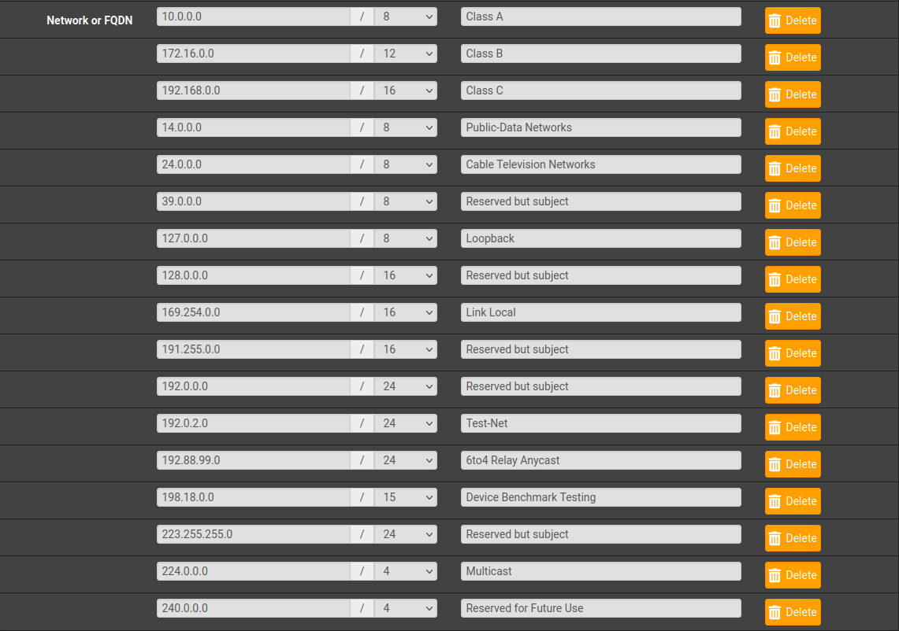
Correctly configured routing devices should NOT forward fe80:: / link-scoped unicast traffic by default, meaning that local traffic should only happen locally. It allows your edge device to talk to the ISP's gateway device, but the ISP's gateway device will not be able to to talk to your internal machines on fe80::, however if you have a globally routable IPv6 address, the address and that interface it's bound to are globally routable.
Alias Ports
It can be helpful to create an alias for all of the ports management interfaces use.
- 22/tcp | SSH
- 80/tcp | HTTP WebGUI
- 443/tcp | HTTPS WebGUI
Of course if you changed any these from their defaults, maintaining them here makes it easy to maintain egress rules.
Firewall
Firewall rules and examples.
Essential Interfaces (WAN, LAN, FLOATING)
FLOATING
* [Optional] Reject outbound RFC1918/3330 traffic over the WAN
* <https://docs.netgate.com/pfsense/en/latest/recipes/rfc1918-egress.html#steps-to-block-rfc-1918-traffic-from-leaving-the-wan-interface>
NOTE: This covers the use case of routing over a VPN, if the VPN goes down private network taffic
will not leave the WAN interface.
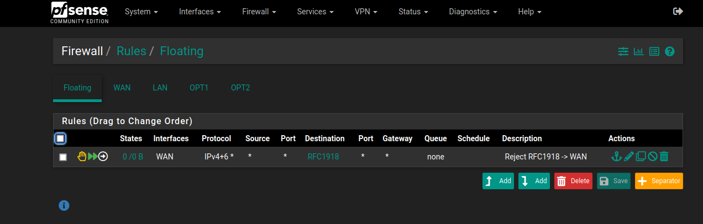
WAN
* Block private networks
* Block bogon networks
* [Optional] Allow ssh/tcp -> WAN interface (whichever port is ssh, this allows ssh tunneling to the
web interface without exposing it)
* [Optional] Allow vpn traffic -> X interface (permit remote access to networks, as well as secure
routing capability back out through the WAN using the vpn's dns server + firewall)
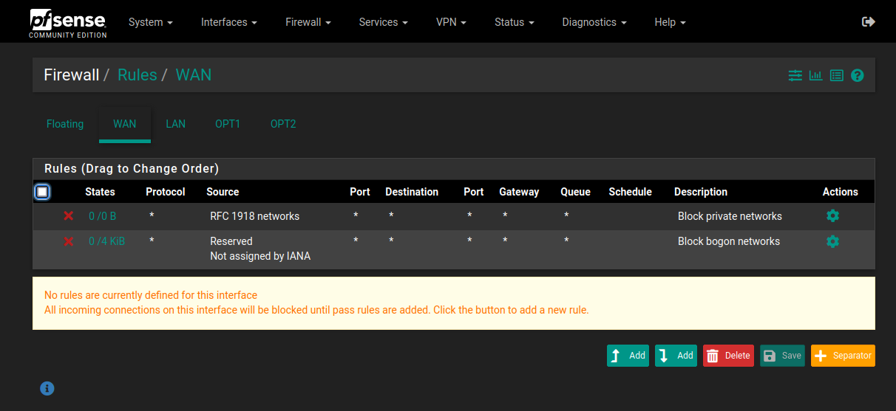
LAN / Management Interface
* Anti-Lockout Rule | Allow to specific management ports on this interface (ie; 22, 443 only, etc)
* [Optional] Allow to other internal interfaces for management from this one subnet
* Disable the 'default allow outbound' rules here to keep this management interface
entirely offline, which is ultimately optional but recommended.
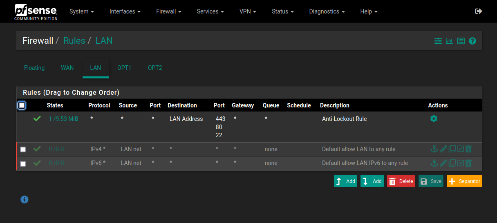
https://docs.netgate.com/pfsense/en/latest/recipes/rfc1918-egress.html
https://docs.netgate.com/pfsense/en/latest/firewall/rule-methodology.html#block-private-networks
NOTE: This suggests that the 'Block private address ranges' rule will break functionality when pfsense is behind another router
(ie; a pfSense vm at 192.168.20.18 bridged to a real network, 192.168.20.0/24)
This has not happened so far, however if it breaks DHCP, DNS, or other local routing, disable it and review.
So far it only effects inbound traffic, which is fine if ssh access from the WAN interface is not required.
TIP: You'll note Block and Reject are mentioned explicitly in the rules below. From an internal perspective, this makes the firewall rules less obvious.
- EXAMPLE 1
- pfSense typically rejects on closed ports.
- If you only Block your management ports, Scanning all 65535 ports on the firewall will reveal exactly which are your management ports
- EXAMPLE 2
- Say you decide to scan ports on a specific IP chosen at random (172.20.111.72) within your current network (172.20.111.0/24)
- If no host exists, this will return as 'filtered'.
- Note that it can return filtered if the host exists and is dropping packets, but for the sake of this example, we know there is no host there.
- When Reject rules are in place to isolate neighboring RFC1918/3330 subnet ranges, any IP address in all neighboring private subnets will immediately return 'closed' for any ports scanned.
- When they do not return 'filtered' as the they would if there was no host at that IP, it becomes obvious you're firewalling neighboring subnets.
Example Firewall Rulesets
OPTx (Subnet egress)
* Block bogon networks
* Reject -> management access
* [Optional] Deny IPv6
* Allow ICMP req -> OPTx
* Allow tcp/udp-> OPTx interface (Dns, DHCP, etc)
* [Optional] Block -> RFC1918/3330 traffic (isolate subnets, else reachable)
* OPTx Net -> Any ICMP req (allow all outbound ICMP ping request)
* OPTx Net -> Any tcp/udp (allow all outbound routing of tpc/udp traffic)
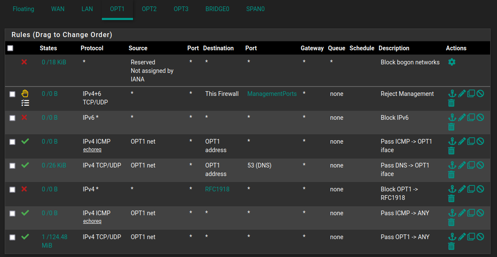
Alternate OPTx (Strict egress)
* Block bogon networks
* Reject -> management access
* [Optional] Deny IPv6
* Allow ICMP req -> OPTx
* Allow udp/53 -> OPTx interface (Dns, DHCP, ping, etc)
* Block -> RFC1918/3330 traffic (isolate subnets, else reachable)
* OPTx Net -> Any ICMP req (allow all outbound ICMP ping request)
* OPTx Net -> Any tcp/80 (Standard outbound http)
* OPTx Net -> Any tcp/443 (Standard outbound https)
* OPTx Net -> Any udp/123 (Standard outbound ntp)
Analysis Network (Reject all traffic)
* Block bogon networks
* [Optional] Reject ANY -> ANY
NOTE: Rejecting ANY -> ANY will still allow Zeek to capture this traffic on the defined SPAN port if the analysis network interface is a member of the BRIDGEx interface. It will also still permit hosts to receive a DHCP lease from the pfSense firewall, be reachable with ping from the pfSense firewall, and for hosts to commnuicate with eachother internally, but no traffic can enter or leave this network. Rejecting ANY -> ANY is not truly necessary, for example simply not having any rules will achieve a similar outcome. The difference is this rule is defined, and any outbound connections will be closed immediately instead of left to time out.
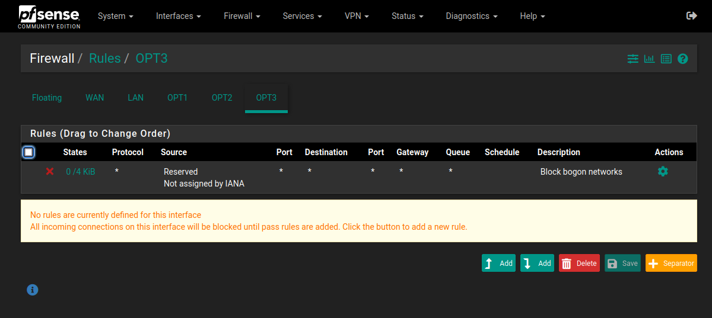
pfSense as a Lab VM
You'll want to review the documents for VMware and VirtualBox on how they describe lan segments:
-
VMware
-
VirtualBox
The key is this type of networking is entirely separate from the host's phyiscal network card.
pfSense is leveraged here to be both the local subnet management system, and a way to control traffic flow, keeping your LAN segments entirely virtual and providing the subnets with outbound network access that require it.
There's a lot of flexibility with this setup, the next steps cover the main details.
This example will you give you a general purpose lab VM with the following isolated subnets (you can use the example rulesets above in these subnets):
- LAN / management network
- OPT1 / trusted network (work machines, local networking)
- OPT2 / untrusted network (lab machines, potentially untrusted local traffic)
- OPT3 / analysis network (no routing, no inbound, no outbound)
- [Optional] SPAN0 / port mirroring network interface
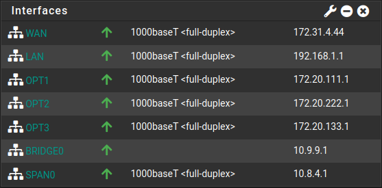
On VMWare Workstation, under VM > Settings > Hardware you'll want to have 6 network adaptors:
| Device | Summary | Details |
|---|---|---|
| Network Adapater | Bridged (Automatic) | Bridged, connected directly to the physical network (This will act as your WAN) |
| Network Adapater 2 | LAN Segment | LAN Segment 1, effectively your LAN or management interface |
| Network Adapater 3 | LAN Segment | LAN Segment 2, this will appear as OPT1 under interfaces, your trusted network |
| Network Adapater 4 | LAN Segment | LAN Segment 3, this will appear as OPT2 under interfaces, your untrusted network |
| Network Adapater 5 | LAN Segment | LAN Segment 4, this will appear as OPT3 under interfaces, your analysis (offline) network |
| Network Adapater 6 | LAN Segment | LAN Segment 5, this will appear as OPT4 under interfaces, you'll want to assign this as your SPAN port |
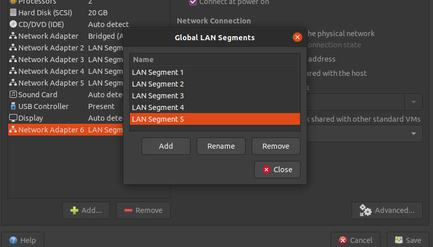
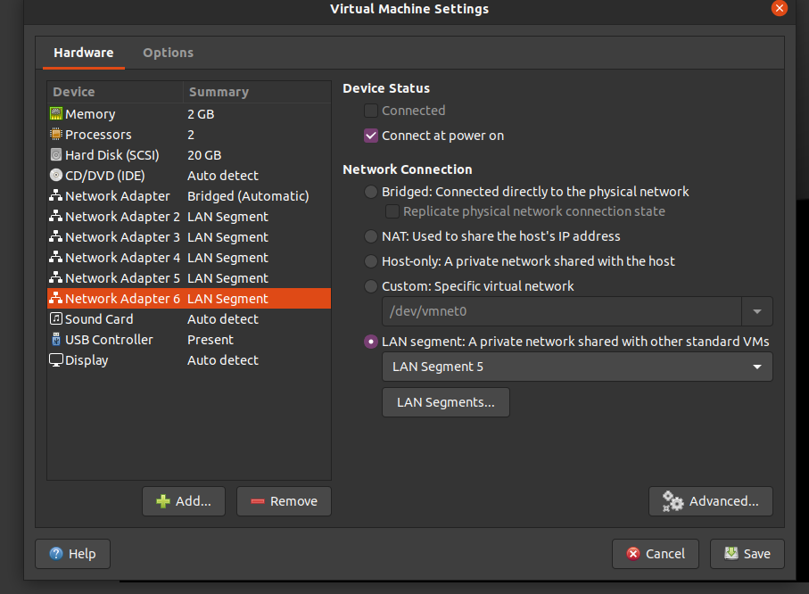
On VirtualBox, we are limited to 4 total network interfaces per VM.
However we can still achieve similar usage with the following setup, under VM > Settings > Network:
| Adapter | Summary | Details |
|---|---|---|
| Adapter 1 | Bridged Adapter | Bridged, connected directly to the physical network (This will act as your WAN) |
| Adapter 2 | Internal Network | You can name these anything, we'll use pf-intnet-1 here, effectively your LAN or management interface |
| Adapter 3 | Internal Network | You can name these anything, we'll use pf-intnet-2 here, this will appear as OPT1 under interfaces, your trusted network |
| Adapter 4 | Internal Network | You can name these anything, we'll use pf-intnet-3 here, this will appear as OPT2 under interfaces, your untrusted network |
While we're limited, we have flexibility in what to do next. I've found the following solutions work, choose whichever one you think is best:
- SOLUTION 1: Configure Zeek to listen on the 'trusted' and 'untrusted' networks
- Zeek can be configured to listen to two network interfaces.
- Instead of using a SPAN port, set it to your two networks that allow outbound traffic.
-
If you need an analysis subnet, simply switch over to the LAN / management interface, and turn off the firewall rules to pass outbound traffic in your untrusted network.
-
SOLUTION 2: Merge your
LANmanagement interface with theOPT1trusted subnet, essentially allow admin access via the trusted subnet - Trusted + management network
- Untrusted network
- Analysis network
Don't forget you can also clone these VM's, and run pfSense behind pfSense. Despite the limitation in network adapters, the possibilities are somewhat limitless.
pfSense Lab VM for OSINT
Taking the above examples, you could dedicate a network interface to OSINT, following the setup recommended in Open Source Intelligence Techniques. This will replicate everything done on phyiscal hardware, such as the VPN + kill switch, only here you can manage and experiment with all of this virtually.
They key points to remember no matter what kind of VPN client you setup:
- If you're dedicating a subnet to run behind the VPN, be sure you've added a network interface as a LAN segment to the pfSense VM ahead of time
- Add the VPN CA to your cert manager
- Add the VPN client profile
- Don't pull routes
- Don't pull DNS if you want to use pfSense for DNS over TLS / HTTPS
- Refuse any non-stub compression
- If your VPN service profiles share a common CA and TLS key, you can configure a single profile to connect to random endpoints
- Add one IP / port pair to the Endpoint Configuration section as normal
- Add the other IP / port pairs to Advanced Configuration > Custom Options, one per line, starting with "remote", ending with a semicolon, like:
remote <ip-address> <port>; - Add
remote-random;to the Advanced Configuration > Custom Options - Each time you restart the OpenVPN service, it will connect to a new endpoint
- Interfaces > Assignments > Add the new OVPN interface you just created and named
- Here you'd also add the interface and DHCP server details for the dedicated subnet, just as described in network interfaces
- Configure manual outbound NAT, set the default gateway to the OVPN interface you just created and named for both outbound mappings
- You want to add the one you named, and not the default virtual interface of 'OpenVPN' which is listed if OpenVPN is connected and running
- Firewall > Rules > Set any rules you require, be sure the default outbound rule has the OVPN interface you just created and named set as it's default gateway (do this under Advanced)
- Once done, be sure to refresh the connection under Status > OpenVPN > Restart openvpn Service
- Use a VM in that subnet (Kali live works well here) to check your public IP with
curl https://ipinfo.io/ip - SSH into the pfSense VM, setup a listener to review DNS traffic for leaks with
sudo tcpdump -i em0 -n -vv -Q out port 53 -Z nobody - Make requests from that subnet to review the packet capture
To review your configuration:
- Status > OpenVPN > Client Instance Statistics shows "Connected (Success)"
- On the same page, ↻ restarting the client will cycle through IP addresses
curl https://ipinfo.io/ip- Visit
https://bgp.he.net/from any browser within the subnet - Start with Status > System Logs > OpenVPN if you're encountering any issues
The easiest and safest way to manage this connection from the host is by bridging the "WAN" side of the pfSense VM so that you can SSH port forward to hit the web interface like this: ssh -p <port> -L 127.0.0.1:8443:127.0.0.1:443 <user>@<pfsense-ip>. Browsing to https://127.0.0.1:8443 on your host will take you to the pfSense web interface. Here you can monitor the connection as well as cycle and change endpoints by restarting the OpenVPN client. This is ideal over making the VPN connection from your host whether it's through the built in openvpn package on Linux, or a VPN service's client application. In both cases you avoid putting your host into the same subnet as the VPN, and in the latter you avoid installing additional software.
pfSense Lab VM for Networking
Similarly, to do network testing you could network two or more additional pfSense systems behind a single 'main' pfSense VM, to communicate with each other. This will allow you to quickly spin up networking configurations and utilities, that generally work best across mutliple subnets and routes.
Malware Analysis Network Isolation
This is critical for an internal and isolated malware analysis subnet, where you do not want anything reaching the world outside of that virtual network.
This set of checks was learned from Practical Malware Analysis & Triage which provides more detailed video walkthroughs of what to do and what to check. The accompanying Discord server also has more information on this topic. This section was heavily shaped from these two sources.
The key to network isolation is ensuring the VM's doing the analysis are only connected to this one network interface and no others.
First, be sure you've seen and configured the analysis subnet like the example above
Then you can test internal and outbound connectivity from your analysis workstation:
-
Obtain local network information on Windows:
ipconfig -
Obtain local network information on Linux:
ip a -
Ping the local gateway
-
Ping a publicly reachable address (we'll use Quad9's public DNS server):
ping 9.9.9.9
You should receive a Request timed out. response and see (100% loss) in your command output like below:
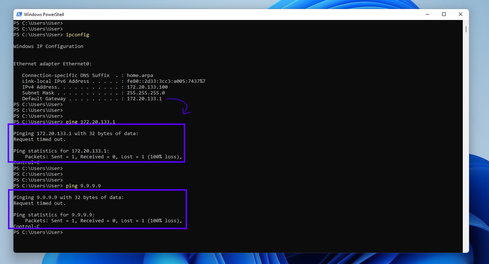
To be exhaustive, ensure DNS cannot be resolved:
On Windows:
nslookup.exe microsoft.com <dns-server>
On Linux:
dig @<dns-server> microsoft.com
All of these should fail / timeout, like the example above.
Next, you can check to see if the firewall itself can in fact reach internal hosts - it should never need to do this but it's one direction you can check to ensure for example DHCP leases can be sent out.
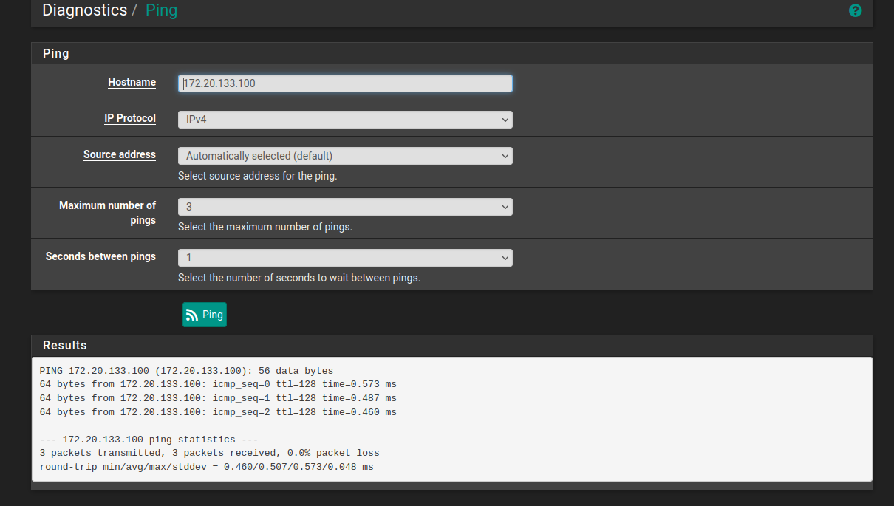
Last and most important, you'll want to check from another internal host that internal machines can talk to eachother, but again not anything else:
- This example pings the Windows 11 workstation from the previous example, at
172.20.133.100 - The gateway is ping'd again at
172.20.133.1to ensure it doesn't respond - The gateway is also checked with
nmapto ensure the web interface is unreachable.
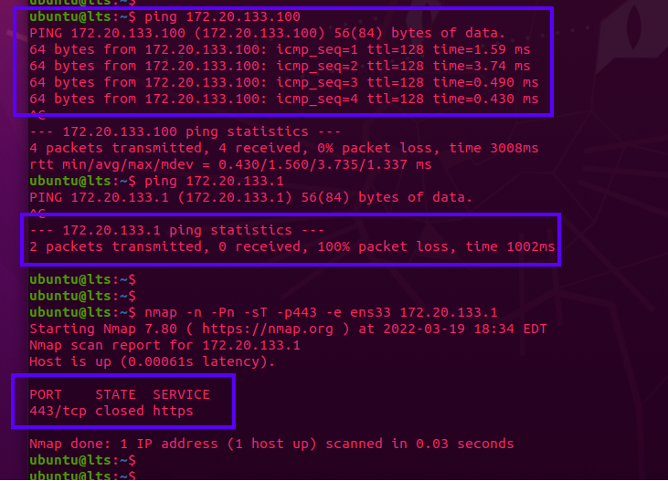
From here you're ready to test or analyze malware as far as the network configuration goes. Remember to also disable Drag & Drop + Copy & Paste and take a snapshot before detonation.
Anytime you need to retreive new samples, or update an analysis workstation, simply roll back to the known-good snapshot, connect to a subnet that permits outbound traffic, run the updates and/or download the latest samples, then switch the network connection back to the analysis subnet before taking a new snapshot.
NAT
Outbound NAT Mode:
Automatic is fine in most cases
Manual can be used to enforce subnets to use specific routes (ie; vpn killswitch, traffic shaping)
TO DO
VPN
Server Configuration:
https://docs.netgate.com/pfsense/en/latest/recipes/openvpn-s2s-route-internet-traffic.html
This guide routes all traffic through, and out of, a single site.
-
Good for traffic inspection
-
Good for personal vpn usage (connect back to a trusted network)
Client Configruation:
Be sure to check Don't pull routes (prevents the server from manipulating the local routing table)
Also choose [Refuse] Allow Compression (don't allow any tunnel compression)
IPv4 Tunnel Network: Set this network range to a private range not in use by any live interfaces on the router, or allow the server to handle this and do not set any interfaces to ip ranges the server uses.
VLANs
A logical splitting of a physical port into other virtual ports
Represented as:
eth0 -> eth0.10, eth0.20, eth0.30...
Creating a VLAN Checklist:
VLAN IDcreated underInterfaces > Assignments > VLANs- If applicable,
VLAN IDalso created underInterfaces > Switches > VLANs- This is necessary on devices such as the SG-1100, or devices leveraging a single network interface with multiple ports already separated logically by VLANs
- For example, the SG-1100 will end up with double tagged VLANs if you're applying your own tags for an upstream switch / AP
- This device is already separating traffic logically on a single interface with VLANs to create a LAN / WAN / OPT
- In other words, they're already tagged
- You're applying your own VLAN tags on top of these to isolate subnets on an upstream wireless access point, or managed switch.
- VLAN interfaces are enabled and defined within
Interfaces > Assignments > [vlan-interface] Interfaces > [vlan-interface],[x] Enable Interface- Optionally rename it from
OPTx - Configure IPv4|6 + other settings
- Set interface's IPv4 static address + netmask
- Block bogon networks (always)
- Set a switch port this interface should map to
- In the case of the SG-1100, this can be left alone.
- For the SG-3100, you can use this to logically separate the 4 LAN ports into isolated VLAN subnets
Save+Applywhen done.
- Optionally rename it from
- DHCP enabled for desired VLANs under
Services > DHCP Server > [vlan-interface]- Here you can configure
Deny unkown clientsandStatic ARPentries. This is useful for correlating traffic logs to IP addresses + MAC addresses Savewhen done
- Here you can configure
- All VLAN interface(s) configured so far should be visible on the Dashboard like any other interface
- Assign firewall rules to VLANs like any other interface
- Provision networking, and tag, upstream switches / Bridged AP's with the desired VLAN tags
- Bridged AP's must support, and be in, bridged mode to allow the pfSense firewall to manage clients, dhcp, etc
Creating a VLAN - Detailed Steps:
Interfaces > Assignments
pfSense Interfaces and VLAN Assignments.
Enable any VLANs you created in Interfaces > Assignments > VLANs here.
EXAMPLE:
- WAN = net2
- LAN = net1
- OPT1 = net0
- OPT2 = VLAN 20 on net0 / OPT1
- OPT3 = VLAN 30 on net0 / OPT1
- LAN2 = VLAN 200 on net1 / LAN
TO DO: add screenshots showing what this looks like in the WebGUI
Interfaces > Assignments > VLANs
This is where both upstream and local VLAN tags are described.
You won't need to define upstream VLANs under Interfaces > Switches > VLANs, only VLANs on the local physical switch are defined there (Exception being the SG-1100 style chipsets, see below)
Remember to enable these under Interfaces > Assignments.
EXAMPLE:
Assign 3 VLANs to the net0 interface, that an upstream Bridged AP will be aware of and using:
Parent Interface: net0
VLAN Tag: 110
Description: VLAN1
Parent Interface: net0
VLAN Tag: 120
Description: VLAN2
Parent Interface: net0
VLAN Tag: 130
Description: VLAN3
-
Interfaces > Assignments > [interface] -
Here again
Switch Portis only relevant for ports on the local physical switch built into the device. -
Upstream VLANs won't be assigned a
Switch Port -
Enable the inerface like any other.
-
Interfaces > Switches > VLANS
The only VLAN's tagged and grouped here are those built directly into the pfSense device's switch
Upstream VLAN's (for example from an access point) are not shown here.
VLAN's group ID number are related to the physical port on the box.
The TAG number assigned by the user is part of the 802.1q standard to identify VLAN's and apply rules.
EXAMPLE:
If there are 5 ports on your switch, port 5 itself being the physical uplink to WAN, and 1-4 being individual ethernate ports;
To keep them all separate, you would tag 5 on each VLAN, and leave the 1,2,3, or 4 untagged.
VLAN group VLAN tag Members Description
0 1 1,5 Default System VLAN
1 120 2,5t LAN2 VLAN
2 130 3,5t LAN3 VLAN
3 140 4,5t LAN4 VLAN
5 remains untagged on the default system VLAN group.
Contrast the above to what the default VLAN mappings look like on the same device if you did not configure any VLANs:
VLAN group VLAN tag Members Description
0 1 1,2,3,4,5 Default System VLAN
SG-1100 VLAN Differences
This device is configured as a 'router on a stick' where the chip is a single 'port' that's broken down logically into three separate ports, the difference being the three logical ports are phyiscal ports on the device. Because of this you will need to double tag based on the port you plan to use the VLANs with.
VLAN group VLAN tag Members Description
0 1 0 Default System VLAN
1 4090 0t,3 WAN
2 4091 0t,2 LAN
3 4092 0t,1 OPT
4 110 0t,1t VLAN1 # this line shows the double tagged VLAN
# tagging the default `0` for the uplink,
# as well as `1` since it's using the OPT port.
Bridging Multiple Interfaces for Port Mirroring (SPAN Port for Traffic Monitoring)
https://docs.netgate.com/pfsense/en/latest/bridges/create.html
Define a set of interfaces to bridge, which become a single bridge interface, and a span port to view their traffic on, for IDS / monitoring.
What you'll need:
- A free interface on the pfSense device to dedicate as a SPAN port, for mirroring traffic from all other ports connected to the bridge
Step 1: Create the SPAN port interface
Interfaces > AssignmentsSelect the next free interface you have available, or bring down and repurpose an existing interface to be used as a SPAN port- Enable interface
- Description: we'll use
SPAN0, however you can name this whatever you like, as with any other interface. - IPv4 Configuration Type: Static IPv4
- IPv6 Configuration Type: None
Static IPv4 Configuration > IPv4 Address: Any RFC1918 address will work, for this example we'll use10.8.4.1, set the cidr range to/32- Block Bogon Networks
- Save
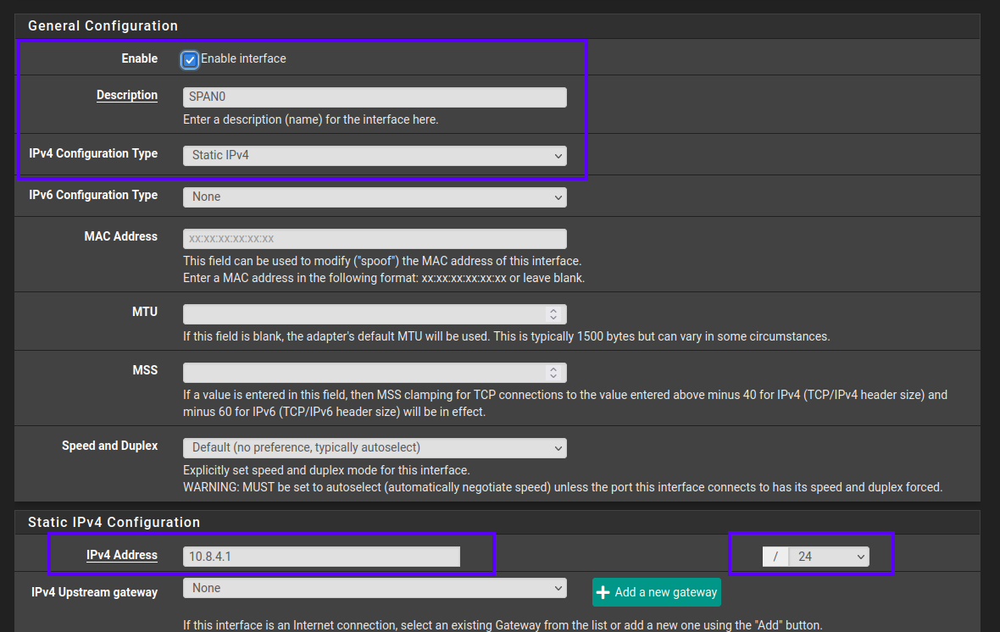
NOTE: this is best handled on a switch, not the router (pfSense in this case) itself. However for a small office / home office / lab use case, this is fine, and also what this guide will follow.
Step 2: Create the BRIDGE interface
You do not need a free interface before doing this, the BRIDGEx interface is a purely virtual interface meant to logically tie together any interfaces you specify as members of this bridge.
Interfaces > Assignments > Bridges > +AddMember Interfaces: Ctrl+click to select all interfaces to monitor, their traffic is to be mirrored on the SPAN port via this BRIDGEx adapter.
Selecting the interfaces:
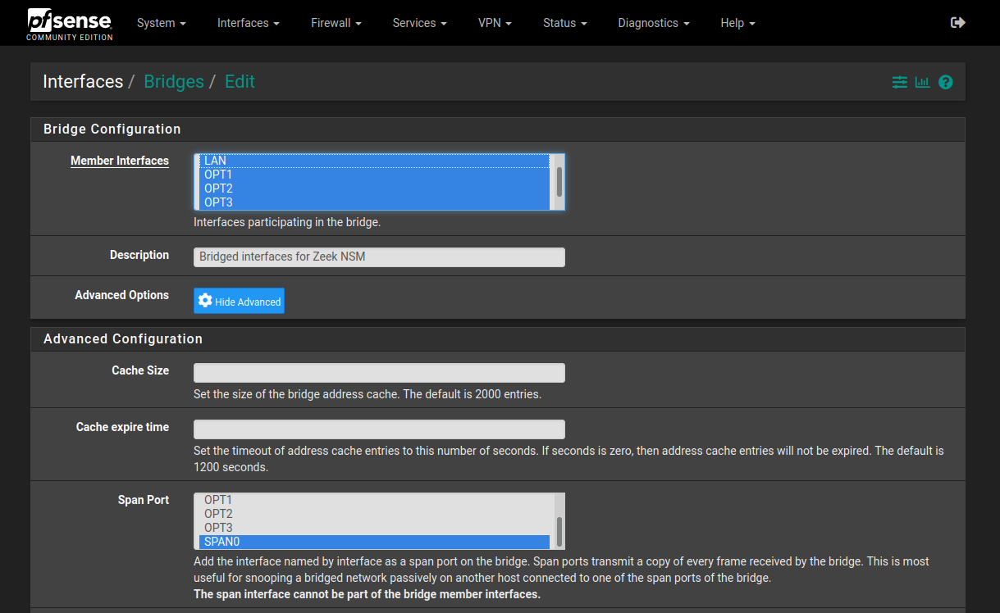
NOTE: on VMware Workstation for Linux, this operation may stall here, or for example if you run tcpdump, or bring up a bridged or promiscuous interface. Switch over to your pfSense VM tab and see if there is a prompt regarding enabling promiscuous mode on the virtual network interfaces you selected. Select OK to acknowledge the prompt - this is normal and will not prevent pfSense from monitoring these virtual interfaces.
- Select
Advanced Options Span Port: select theSPAN0interface we created above.Save
Here's what BRDIGE0 should look like under Interfaces > Bridges:
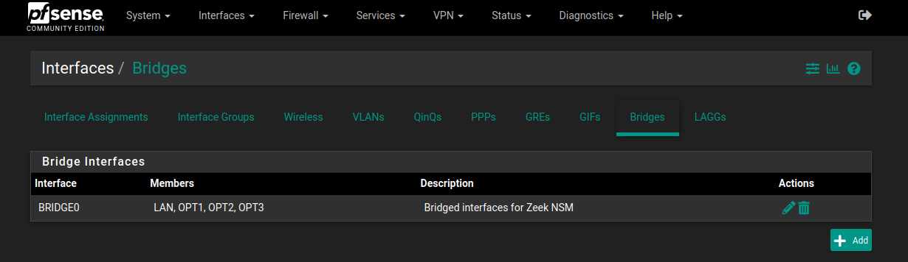
Next:
Interfaces > Assignmentschoose to+Addthe newestBRIDGExinterface, likely BRIDGE0- Save
- Click the
OPTxinterface link for the newly created BRIDGEx - Enable interface
- IPv4 Configuration Type: Static IPv4
- IPv6 Configuration Type: None
Static IPv4 Configuration > IPv4 Address: Any RFC1918 address will work, for this example we'll use10.9.9.1, set the cidr range to/32- Block Bogon Networks
- Save
Step 3: Confirm the interfaces are up && monitoring
-
You do not need to configure DHCP server settings, each interface is a single host (/32) static IPv4 address.
-
You do not need to configure any real firewall rules for the BRIDGEx or SPANx interfaces to monitor traffic. They both can have the single rule of "Block bogon networks" (which is also optional).
If you're curious how you can manage firewall / traffic filtering when using a bridge interface, see the pfSense documentation page here:
https://docs.netgate.com/pfsense/en/latest/bridges/firewall.html
Essentially the default setting in pfSense is to honor the rules already configured for the individual interfaces being monitored, and ignore rules on the bridge interface. In other words, the bridge is simply passive by default in that it is only monitoring traffic and not doing additional filtering.
Under System > Advanced > System Tunables review the following values (1=enabled, 0=disabled) this example shows the defaults described above:
net.link.bridge.pfil_member Packet filter on the member interface 1
net.link.bridge.pfil_bridge Packet filter on the bridge interface 0
Bridge interface firewall rules:
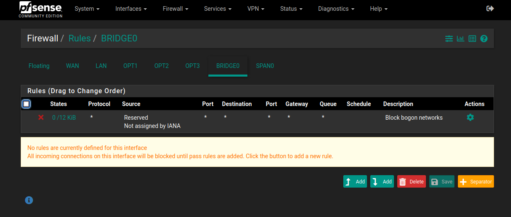
SPAN interface firewall rules:
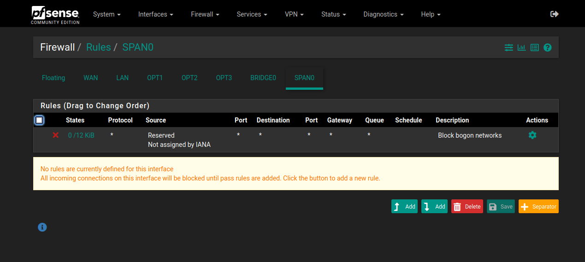
The next steps will be easier to 'see' if you spin up a Live OS to connect to one of the LAN segments and generate some traffic. A Live OS is suggested due to the low resource and configuration requirements while you're testing and configuring Zeek.
When you're ready, back on pfSense follow either the SSH or GUI instructions:
- [GUI]: Go to
Diagnostics > Command Prompt - [SSH]: SSH into the firewall, and ensure the management user can run commands with sudo
- Run
ifconfigto identify theemXdevice with the description ofSPAN0(or what you named it).
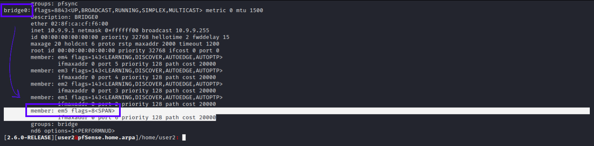
- [GUI]: Go to
Diagnostics > Packet Capture, selectSPANxfor theInterface,Portof53and then clickStart - [GUI]: After a minute or two passes, or you've manually generated some traffic (
dig @1.1.1.1 ubuntu.comornslookup microsoft.com 9.9.9.9)Stopthe packet capture. - [SSH]: Alternatively Run
sudo tcpdump -i emX -n -vv port 53where emX is your SPAN port interface (ie; em5, yours could be different) and port 53 is easy to visually parse since it's only looking at DNS request.
TO DO: See what changes are required to run tcpdump with -Z
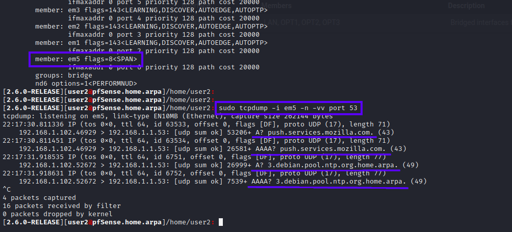
- If you have devices on the network you should see traffic, and it should be under their assinged IP address on the network, which is exactly what we want.
- NOTE: This will capture traffic that does not pass (is dropped / rejected), for example if you have a subnet dedicated to malware analysis. This will capture or 'see' all of the DNS requests being made by all of the hosts on that subnet, even though no traffic is routed out of that network - if the packet hits the firewall, it can see it.
- You can verify this by watching the requests being monitored by the
SPAN0port using thetcpdumpcommand above - In another SSH session window on the pfSense box, running
sudo tail -f /var/log/resolver.logto see what DNS queries the firewall is actually resolving (this assumes you have set pfSense's DNS resolver to ignore external DNS servers, and only use it's own internal configuration to resolve queries as detailed above in this guide - as a reminder that forwards the queries over TLS upstream to cloudflare and quad9).
Step 4: Configure Zeek to monitor the SPAN port
System > Package Manager > Available Packagesinstallzeek- Go to
Services > Zeek NSM > General - Enable Zeek NSM
- Hostname:
10.7.8.1this is the IP address of the SPAN interface we assigned in the example above this section, yours may be different if you chose a different IP address and range. - Zeek Interface(s):
SPAN0 - Local Network Configuration: The following private address ranges will be fine in most cases:
10.0.0.0/8 172.16.0.0/12 192.168.0.0/16 fc00::/7 fe80::/64
Step 5: [Optional] Configure Zeek as a cluster
- Go to
Services > Zeek NSM > Zeek Cluster - Check
Enabled Zeek Cluster - Manager, Proxy, Worker 1, and Worker 2 Hosts should be set to
127.0.0.1 - Set Worker 1 and Worker 2 Interfaces to
loopback
If you run zeekctl status from the CLI or Command Prompt (GUI) and it still returns that Zeek is running as type standalone you may need to either reboot pfSense, or manually edit /usr/local/etc/node.cfg
Further configuration file examples for Zeek can be found here:
https://github.com/activecm/docker-zeek/tree/master/etc
Next, you'll want to install the zeek-open-connections zkg package if you plan to analyze this data with RITA
All of the typical Zeek commands work from the SSH / Console CLI (The prompts will not work from the WebGUI), for example:
sudo zeekctl status
sudo zkg refresh
sudo zkg install zeek/activecm/zeek-open-connections
sudo zkg list
Running those will install the zkg package successfully.
IMPORTANT: It's recommened to reboot pfSense here for Zeek to fully restart with the latest configuration changes.
One great feature of Zeek on pfSense is the real time inspection of all your bridged interfaces via the WebGUI.
Go to Services > Zeek NSM > Real Time Inspection and select a Log file to view, and the Max lines to show at one time. With this you can view all data being captured live, for a quick visual inspection.
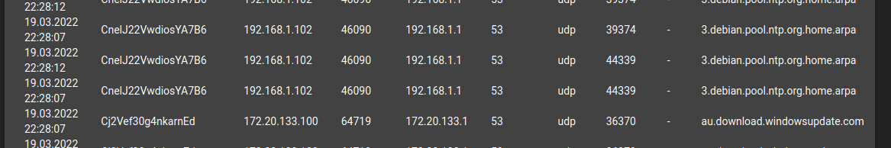
See Zeek Network Security Monitor (NSM) below for more details.
Using a managed switch
Cisco's explaination of unmanaged, smart, and managed switches is a good starting reference:
Types:
- Unmanaged: plug and play, no configuration possible
- Smart: some advanced features, meant for edge of network (conference rooms, printing, labs)
- Managed: fully configurable, deployed at the core of the network for traffic shaping, QOS, IDS, etc.
Options:
- Speeds 10|100|1000 mbps
- Ports 4|8|16|32|etc
- PoE: powers devices from the switch if they use PoE
- Stackable vs Standalone: standalone are static devices, stackable switches allow stacking multiple of the same unit, seemlessly with current configuration - supports failover if one unit fails, and routes traffic around it.
Logs
Status > System Logs > Settings
Log Message Format: syslog
- [x] Forward / Reverse Display
Log Rotation Size (bytes):
Default: 512000 (500 KiB)
Recommended: 4000000 (4MB) This value may change depending on Log Retention Count and log storage policy
Number of Logs:
Default: 7
Recommended: Whatever works for your system. Keeping more logs that are all a small size is reasonable to still view in the Web GUI if you have space. Forwarding logs means you won't take up space on the pfSense machine.
Useful log files:
| Log File | Path |
|---|---|
| Logins | /var/log/auth.log |
| Dns Logs | /var/log/resolver.log |
| Firewall Logs | /var/log/filter.log |
Logging Network Traffic
How to log and maintain network data using pfSense.
This section would not exist without these resources:
- https://github.com/0ptsec/optsecdemo
- https://www.activecountermeasures.com/raspberry-pi-network-sensor-webinar-qa/
- https://github.com/william-stearns (wstearns-ACM) in the Threat Hunter Community Discord
- https://unix.stackexchange.com/questions/194863/delete-files-older-than-x-days (user basic6's answer)
This is meant to run on any box with tcpdump available, and pairs well with the external storage section below:
sudo pw groupadd logsync
sudo mkdir /mnt/external/pcaps
sudo chown nobody:logsync /mnt/external/pcaps
sudo chmod 750 /mnt/external/pcaps
sudo pw groupmod logsync -m $YOUR_USER
Where $YOUR_USER is the account on pfSense you'll be connecting to over ssh to bring logs back to a central logging system.
What this does is sets pcaps/ to be owned by the user nobody and the group logsync, so when tcpdump drops privileges, the nobody user can write to that folder. The 5 in 750 allows any user that's part of the group logsync to view but not write to the folder. This is an easy way to limit permissions while scripting the collection of logs safely over ssh. The 0 in 750 prevents any other user context on the system from examining or modifying the pcaps.
If you don't have an external storage device, be aware of your firewall's disk space and be sure to limit the pcap file rotation frequency via cron (below).
tcsh does not understand command substitution, just use pfSense.%Y%m%d%H%M%S...
sudo /usr/sbin/tcpdump -i ethX -Z nobody -G 3600 -w /mnt/external/pcaps/pfSense.%Y%m%d%H%M%S.pcap
In all cases, replace ethX with the name of the interface you want to capture on. Ideally you would have a SPAN port that's mirroring traffic from all interfaces, and capture on that.
pfSense running tcpdump unprivileged:
sudo /usr/sbin/tcpdump -i ethX -Z nobody -G 3600 -w /tmp/pfSense.%Y%m%d%H%M%S.pcap '((tcp[13] & 0x17 != 0x10) or not tcp)' &
pfSense running tcpdump as root:
sudo /usr/sbin/tcpdump -i ethX -G 3600 -w "$(sudo mktemp -d)/pfSense.%Y%m%d%H%M%S.pcap '((tcp[13] & 0x17 != 0x10) or not tcp)' &
The easiest way to run these commands is by appending an & to send them into the background. From here you can easily monitor them with ps aux.
If you want to stop the capture running this way, obtain the pid of the root owned process running tcpdump you find with ps aux, then run kill <pid>.
To rotate your pcap files based on a range of days, create the following task under /etc/cron.d/pcap-rotation-service:
# Cron task to rotate pcaps
# Rotates pcap files under $PCAP_PATH based on the range of time in $DAYS
# For example, +60 means the last 60 days of pcaps are maintained
* 0 * * * root /usr/bin/find $PCAP_PATH -type f -mtime +$DAYS -delete
Replacing $PCAP_PATH with where you're storing your pcap files, and $DAYS with how many days of network traffic you want to maintain. This means you will always have pcaps available of the most recent 60 days.
Collecting Logs
- https://github.com/activecm/zeek-log-transport/blob/master/zeek_log_transport.sh
- https://github.com/opsdisk/the_cyber_plumbers_handbook
To collect logs over ssh, you could use cron + rsync to automatically pull them into a central logging system.
Modifying the ssh example from the rsync manual, here's what collecting logs from a pfSense system could look like:
rsync -arv --safe-links --delete -e ssh pfsense@172.31.199.101:"/mnt/external/pcaps/" /home/ubuntu/Logs/pcaps/
This "archives" (preserves unix file characteristics) recursively and verbosely (-arv), the remote files, ignoring dangerous symlinks if files happen to have been tampered with (--safe-links), deleting any extraneous files locally that aren't present remotely (--delete), over ssh (-e ssh), from the remote path of /mnt/external/pcaps to the local path of /home/ubuntu/Logs/pcaps.
If you need to use something like a jump proxy, the same command from above would look like this:
rsync -arv --safe-links --delete -e "ssh -J <user>@<jump-hostname>:<port>" pfsense@172.31.199.101:"/mnt/external/pcaps/" /home/ubuntu/Logs/pcaps/
You'll want to review the rsync manual's --rsh=COMMAND, -e section for correctly encasing quotes and character escaping.
Upgrade Log
https://docs.netgate.com/pfsense/en/latest/troubleshooting/upgrades.html#upgrade-log
A log of all latest upgrade attempts is kept at: /conf/upgrade_log.latest.txt
CLI
The FreeBSD Handbook will answer many of your questions in getting started here.
https://docs.freebsd.org/en/books/handbook/basics/
See the Netgate docs on troubleshooting > lockout for various CLI examples
https://docs.netgate.com/pfsense/en/latest/config/console-menu.html
https://docs.netgate.com/pfsense/en/latest/troubleshooting/upgrades.html
By default pfSense has no man command to view manuals like Linux or macOS typically has.
Running a command either with --help, -h, or without arguments will likely print basic usage details
CLI: Firewall
https://docs.netgate.com/pfsense/en/latest/firewall/pf-ruleset.html
https://docs.freebsd.org/en/books/handbook/firewalls/#firewalls-pf
CLI: System Services
https://docs.freebsd.org/en/books/handbook/config/
Service scripts are handled by rc.d:
/etc/rc.d/*
/usr/local/etc/rc.d/*
Check if a service is running:
service <service> status|onestatus
service sshd onestatus
Restart a service:
service sshd restart
Some services cannot be managed this way. You will need to either manage these from the WebGUI or by using common BSD commands.
Unbound is an example of this. Sometimes the daemon is running but isn't resolving domains, or writing to the log file correctly.
To restart unbound:
# You can see the commandline invocation that the system uses to start unbound with:
ps aux | grep "^unbound"
# Obtain the pid:
ps aux | grep "^unbound" | cut -d ' ' -f 2
# Stop unbound
sudo kill <pid>
# Start unbound
sudo /usr/local/sbin/unbound -c /var/unbound/unbound.conf
Packages
https://docs.freebsd.org/en/books/handbook/ports/
Fix a broken pkg db:
https://docs.netgate.com/pfsense/en/latest/troubleshooting/pkg-broken-database.html
TIP: pfSense has git available as a package. sudo pkg install -y git-\*
pkg Binaries and pfSense WebGUI Availability
pfSense has two binaries for package management, pkg and pkg-static.
/usr/sbin/pkg
/usr/local/sbin/pkg-static
The official documentation recommends using pkg-static to [re]install packages.
It's not clear what the difference is between the two, both appear to work similarly for basic package management functions.
In any case you will need to install the corresponding pfSense package if one exists for a package you want to install, for example:
user@pfSense: pkg search nmap
nmap-7.91_3 Port scanning utility for large networks
pfSense-pkg-nmap-1.4.4_5 pfSense package nmap
If you install nmap-7.91_3 by itself, you can still use nmap from the commandline, however Diagnostics > Nmap will not be available in the WebGUI without also installing pfSense-pkg-nmap-1.4.4_5
As version numbers can change, you may simply use <package-name> and pfSense-pkg-<package-name> to install both at once, like this:
sudo pkg install -y nmap pfSense-pkg-nmap
Print a list of all currently installed packages:
pkg info
Update the package repository metadata:
sudo pkg update -f
Upgrade currently installed packages with available updates:
sudo pkg upgrade
Remove packages installed as dependencies that are no longer needed (leaf packages):
sudo pkg autoremove
Clean the pkg cache:
sudo pkg clean
# or all:
sudo pkg clean -a
Get detailed information on a particular package:
pkg info openvpn
Search the binary package repository for an application
pkg search openvpn
Install package(s):
sudo pkg install -y sudo zeek pfSense-pkg-sudo pfSense-pkg-zeek
Uninstall an installed package:
sudo pkg delete curl
# or
sudo pkg remove curl
# escape wildcards with '*'
sudo pkg delete pstree-\*
Audit currently installed packages for known vulnerabilities:
sudo pkg audit -F
Fetching vuln.xml.xz: 100% 941 KiB 963.5kB/s 00:01
openvpn-2.5.4_1 is vulnerable:
openvpn -- Potential authentication by-pass with multiple deferred authentication plug-ins
CVE: CVE-2022-0547
WWW: https://vuxml.FreeBSD.org/freebsd/45a72180-a640-11ec-a08b-85298243e224.html
dnsmasq-2.86,1 is vulnerable:
dnsmasq -- heap use-after-free in dhcp6_no_relay
CVE: CVE-2022-0934
WWW: https://vuxml.FreeBSD.org/freebsd/3f321a5a-b33b-11ec-80c2-1bb2c6a00592.html
strongswan-5.9.4 is vulnerable:
strongswan - Incorrect Handling of Early EAP-Success Messages
CVE: CVE-2021-45079
WWW: https://vuxml.FreeBSD.org/freebsd/ccaea96b-7dcd-11ec-93df-00224d821998.html
cyrus-sasl-2.1.27_2 is vulnerable:
cyrus-sasl -- Fix off by one error
CVE: CVE-2019-19906
WWW: https://vuxml.FreeBSD.org/freebsd/a80c6273-988c-11ec-83ac-080027415d17.html
4 problem(s) in 4 installed package(s) found.
Package: Zeek Network Security Monitor (NSM)
Install Zeek from the packages list System > Package Manager > Available Packages, search for zeek
Or with pkg:
sudo pkg install -y zeek pfSense-pkg-zeek
Zeek filesystem locations:
/usr/local/etc/node.cfg
/usr/local/etc/networks.cfg
/usr/local/etc/zeekctl.cfg
/usr/local/bin/zeek*
/usr/local/share/zeek/*
/usr/local/share/zeek/site/local.zeek
/usr/local/share/zeek/site/local.zeek.sample
/usr/local/logs/*
/usr/local/logs/yyyy-mm-dd/
/usr/local/logs/current -> /usr/local/spool/zeek
/usr/local/logs/stats
Zeek should have an entry automatically added under /etc/crontab to restart it if it is not running:
*/5 * * * * root /usr/local/bin/zeekctl cron
Review the local zeek log files from SSH:
zgrep 'gitlab.com' /usr/local/logs/yyyy-mm-dd/dns.*.log.gz
TO DO: provide an example cron task that tar archive's zeek logs and prepares them to be retreived + deleted from the pfSense system over SSH for external storage + analysis with RITA.
Zeek Configuration
Zeek has a few easy to navigate configuration pages under Services > Zeek NSM
-
Standalone configuration is an option, however only one interface can be monitored at a time. NOTE: This works great for monitoring a SPAN / Mirror port directly on the local pfSense device.
-
Hostname:
127.0.0.1, this can alternatively be the IP address of theSPAN0interface if you've configured one for port mirroring. -
Zeek Interfaces:
interface, this can be theSPAN0interface. -
Local Network Configuration: local subnets to monitor, usually private address ranges such as these:
10.0.0.0/8 172.16.0.0/12 192.168.0.0/16 fe80::/64 fc00::/7
Alternatively, configuring Zeek as a Cluster is recommened even on a single box.
This is essentially the same as standalone in this instance, except it allows Zeek to listen on up to two interfaces, and potentially connect with with other nodes should you expand later on.
Below is an example listening on two internal interfaces:
Manager: `127.0.0.1`
Proxy: `127.0.0.1`
Worker 1 Host: `127.0.0.1` # workers use localhost when manager does, else you'll see errors in the system log trying to use the interface address
Worker 1 Interface: `OPT1`
Worker 2 Host: `127.0.0.1` # workers use localhost when manager does, else you'll see errors in the system log trying to use the interface address
Worker 2 Interface: `OPT2`
Confirm your configurations over SSH or with Diagnositcs > Command Prompt:
cat /usr/local/etc/node.cfg
Seeing this configuration file's comments will likely help you visualize the configuration of standalone vs cluster better.
NOTE: In a cluster configuration, Zeek can only monitor up to 2 network interfaces. It's recommended you create a BRIDGE and SPAN interface for port mirroring if you need to monitor more than 1 interface.
Use Services > Zeek NSM > Realtime Inspection to monitor data live
As of pfSense 2.5.2, check to ensure /usr/local/share/zeek/site/local.zeek exists.
If not, create it from the default example file in the same directory:
cp /usr/local/share/zeek/site/local.zeek.sample /usr/local/share/zeek/site/local.zeek
Running Zeek Unprivileged
TO DO: Provide an example of how to do this.
Excerpt from the installer:
The rc.d script now honors the zeek_user rc.d variable. To run as a user other than root (the default) you need to make a few changes. For example to run as the user zeek, add this to /etc/rc.conf: zeek_enable="YES" zeek_user="zeek" Add this to /etc/devfs.conf: own bpf root:bpf perm bpf 0660 And add zeek to the bpf group: bpf:*:81:zeek and restart the devfs service: service devfs restart or reboot. If the interface defined in node.cfg is configured for NIC checksum offloading (the default when this feature is supported by the hardware) you will want to set ignore_checksums in site/local.zeek: redef ignore_checksums = T;
External Storage
While pfSense should mainly be used as a firewall, and is not meant for long term storage or as a central logging server, it's ability to do a number of network forensics and debugging means at some point you may need to temporarily add external storage to the device. This is a good idea instead of letting a packet capture run overnight, only to later discover the partition (or worse the entire filesystem) has been flooded and no new data can be written, effectively halting the operation of your firewall.
The easiest way to walk through and familiarize yourself with these steps is in a VM. Pass through an external USB device to get started.
The FreeBSD documentation on both USB disks and Adding Disks will help guide you through this process.
The first thing you'll see from a terminal when connecting the external device, in this example we'll use a 64GB USB drive, is the device's entry in dmesg. Use dmesg | grep '<device>' to review this information later (where <device> for example could be da1).
We'll also use da1 as the device name for the rest of these examples.
Confirm the device's name under /dev/ with ls -l /dev/da1*
From here follow the steps in the FreeBSD manual to create a new UFS (this will work fine even if pfSense is running on a ZFS):
- https://www.freebsd.org/cgi/man.cgi?query=gpart&sektion=8&format=html#EXAMPLES
- https://docs.freebsd.org/en/books/handbook/disks/#usb-disks
The following commands are mostly mirrored directly from those pages linked above:
sudo gpart destroy -F da1
sudo gpart create -s GPT da1
sudo gpart add -t freebsd-ufs -a 1M da1
gpart show da1
sudo newfs -U /dev/da1p1
sudo vi /etc/fstab
Add the following to /etc/fstab, replacing "external" with whatever you'd like to name your device's mount point:
/dev/da1p1 /mnt/external ufs rw 2 2
Finally, create the mount point and mount the device:
sudo mkdir /mnt/external
sudo mount /mnt/external
Your external storage is ready for use. Be sure to create a folder within this filesystem that is writable by the correct users (if you don't want to be running as root to write to it).
To undo all of these steps, erasing the external device to an empty state and removing the external filesystem from pfSense:
sudo umount /mnt/external
sudo gpart destroy -F da1
sudo rm -rf /mnt/external
sudo vi /etc/fstab
# remove the entry with the external filesystem's mount point
ZFS
The same can be done with zfs. First, be sure the device is completely empty and not mounted to the filesystem.
If it's currently mounted, zpool will raise an error. If it's not empty, this operation will make the data (likely) unrecoverable.
sudo umount /mnt/external
sudo gpart destroy -F da1
The zfs chapter in the FreeBSD handbook goes into detail on how you can configure this type of filesystem.
This Ubuntu tutorial on setting up zfs storage is also a good point of reference.
For our purposes, to quickly attach an external device (taken and adapted from the examples linked above):
sudo mkdir /mnt/external
sudo zpool create -m /mnt/external external /dev/da1
This will mount the device at /external and show it under df -h as well as mount.
When you're done, to erase the device and it's contents from the filesystem:
sudo zpool destroy external
You may also notice even after erasing this device with dd, gpart, or zpool, the device still contains the zfs_member label.
There are two ways to do this. Using zpool, this stackexchange post demonstrates the command:
sudo zpool labelclear /dev/da1
Another way is to erase both the beginning and the end of the device with dd. This can be done using the seek option.
A way to calculate the offset is by obtaining the device size in MB with dmesg:
dmesg | grep 'byte sectors'
You're looking for the line in dmesg starting with our device name, in this example it's da1.
Using the same example of a 64GB disk, we see 58656MB as the total size. We want to aim for the last few MB, so we'll use 58650 in our command.
These two dd commands will successfully remove the zfs label:
sudo dd if=/dev/zero of=/dev/da1 bs=1M status=progress count=10
sudo dd if=/dev/zero of=/dev/da1 bs=1M status=progress seek=58650
Troubleshooting:
TO DO
Install Issues: https://docs.netgate.com/pfsense/en/latest/troubleshooting/installation.html
Upgrade Issues: https://docs.netgate.com/pfsense/en/latest/troubleshooting/upgrades.html
Broken PKG DB: https://docs.netgate.com/pfsense/en/latest/troubleshooting/pkg-broken-database.html
Unable to Obtain IP Address or Access GUI
I've only been able to replicate this when adding BRIDGE and SPAN interfaces for port mirroring, then making changes to the dashboard GUI layout.
Something causes the management interface DHCP server to stop leasing IP addresses.
Luckily IPv6 Link-Local scope is a direct connection without the need for IPv4 style DHCP.
- Obtain your connected interface's inet6 local address (fe80::x) with
ip aorifconfig. - Capture packets on your connected interface with
sudo tcpdump -i <iface> -n -vvand look for both fe80::x addresses, the one opposite of yours is pfSense's address.
NOTE: I have not been able to get a browser to connect to an IPv6 address. You may have better luck; http://[fe80::1111:2222:3333:4444]:443/
- Port forward with SSH into the interface so you can browse to the GUI:
ssh -L 8443:127.0.0.1:443 <pfsense-user>@fe80::aaaa:bbbb:cccc:1234%<your-iface> - Point your browser to
https://127.0.0.1:8443 - Re-enable DHCP for the interface that lost it;
Services > DHCP Server > <iface>checkEnable
Management Stack Fails to Load After Reboot
Observed Conditions
This has only been replicated on an SG-1100 under heavier network strain.
On occassion this has happened, if for example you're streaming Netflix or running high volume network scans (nmap) while needing to reboot pfSense. In cases like this, everything comes back online in 2-3 minutes, but you'll find you cannot reach the management interfaces over SSH or HTTPS, no matter how you're trying to reach them.
When this happens the simplest solution is to connect via the serial console, and reboot the machine one more time. Over time logs may be added here that could point to why this happens, but so far no consistent issue has been found.
Serial Connection
If you have your pfSense box installed in some sort of rack and have the space, leaving the serial cable connected and wrapped up behind the device while not in use may save you time if you ever need to reconnect again.
pfSense Fails Reconnecting to Tailnet
Sometimes after a reboot Tailscale may not connect back to your tailnet. Simply restart the Tailscale service to fix this.
If you use Tailscale to manage pfSense remotely this can be an issue. Having an alternate remote access method such as SSH (even externally with limited ingress rules) or another jump box connected to your Tailnet on pfSense's management subnet, can save you.